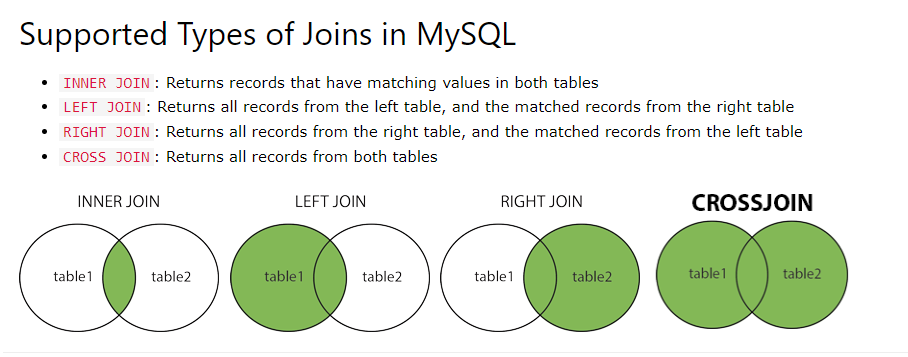

MySQLi In & Between
The IN operator is used to specify multiple values in a WHERE clause and acts as a shorthand for multiple OR conditions.
SELECT * FROM users WHERE id IN (10, 15, 20);
Also, IN can be used to specify results of another SELECT query.
SELECT * FROM users WHERE postcode IN (SELECT postcode FROM countries);
The BETWEEN Operator
The BETWEEN operator is used to select values in a given range.
SELECT * FROM users WHERE age BETWEEN 25 AND 30;
To select other than the result set, we can use following:
SELECT * FROM users WHERE age NOT BETWEEN 25 AND 30;
MySQLi Aggregate Functions
MySQL provides aggregate functions to get the aggregate of the set of results.
min()
The min() function is used to return the smallest value of the selected column.
SELECT MIN(age) FROM users;
We can also use aliases for field names like:
SELECT min(age) as minimum_age FROM users;
max()
The max() function is used to return the largest value of the selected column.
SELECT MAX(age) FROM users;
count()
The count() function is used to count the number of rows returned in the resultset.
SELECT COUNT(*) FROM users;
SELECT COUNT(*) FROM users WHERE age > 20;
avg()
The avg() function is used to calculate and return the average value of a numeric column.
SELECT AVG(age) FROM users;
SELECT AVG(age) as average_age FROM users;
sum()
The sum() function is used to calculate and return the sum of a numeric column.
SELECT SUM(price) FROM orders;
SELECT SUM(price) AS total_price FROM orders;
MySQLi GROUP BY
The GROUP BY statement groups rows that have the same values into summary rows.
SELECT * FROM orders GROUP BY postcode;
MySQLi HAVING
The WHERE clause cannot be used with aggregate functions so HAVING clause was added to SQL.
SELECT * FROM ORDERS GROUP BY postcode HAVING min(price) > 20;
MySQLi Joins
A JOIN clause can be used to combine rows from two or more tables based on a related column/field between them.

Exercises
Create a database and:
- Another table named customer with fields: id, first_name, last_name, email, mobile, postcode
- A new table named order with fields: id, order_id, customer_id, price, status, order_date
- Insert 5 records in each table
- Select all records from order table between 25th Oct to 10th Nov
- Count all customers with postcode 2145
- Find the minimum, maximum and average price for all orders.
- Use aliases wherever possible
- Group all customers by postcode
- Display only those orders whose minimum price is 50
- Join both the tables to display the list of customers who have ordered something.